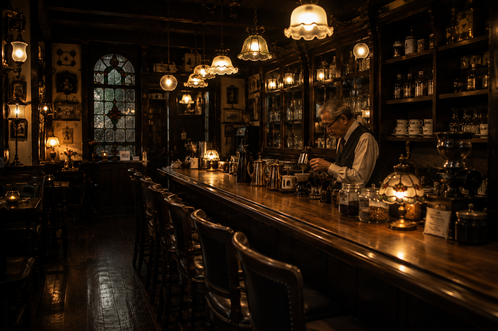
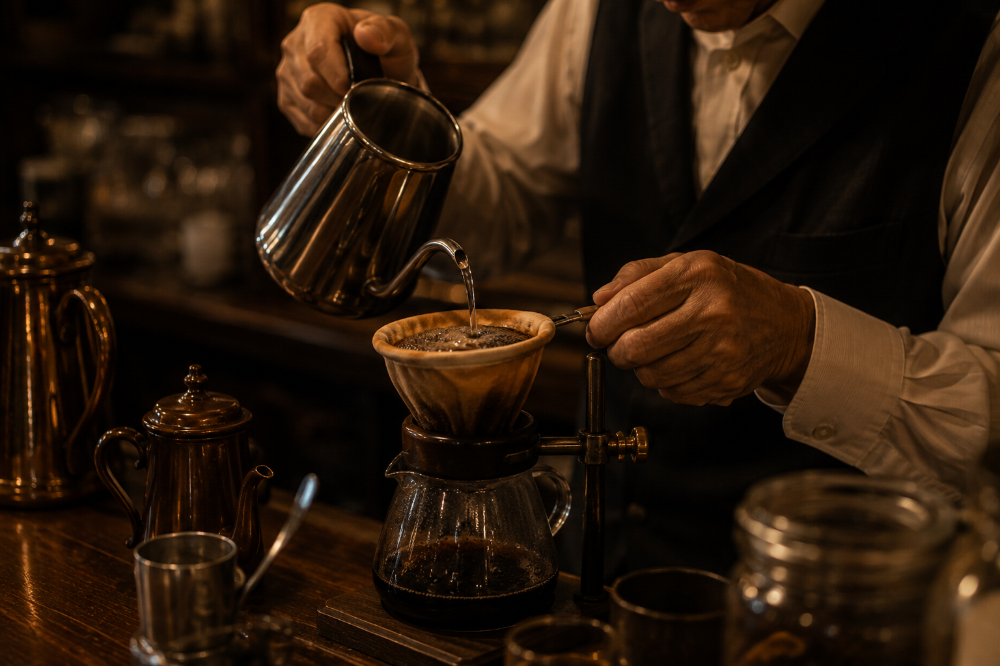
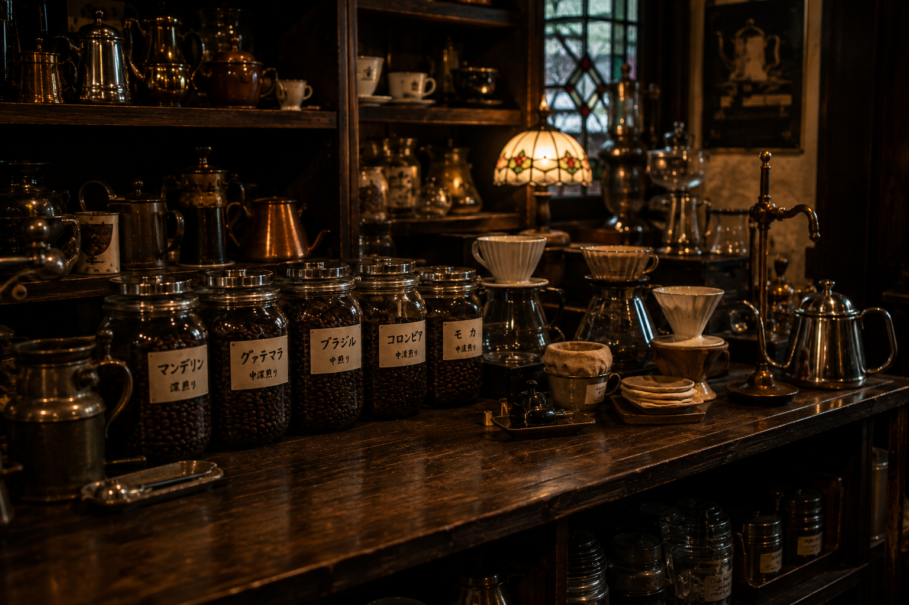
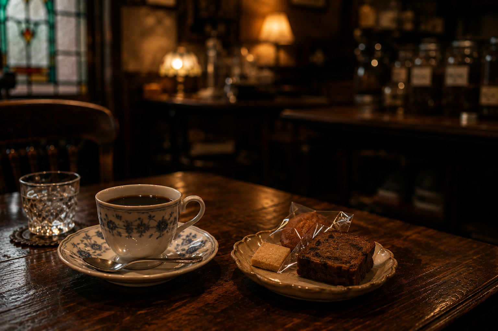

純喫茶 ロマン
珈琲を、ゆっくりと。

ロマンについて
変わらず、
一杯ずつ。
昭和の頃、この街の片隅に生まれた小さな喫茶店。
珈琲が好きだった店主が集めた照明や家具とともに、
今日も変わらず、一杯ずつ珈琲を淹れています。
新しいものは、ほとんどありません。
使い込まれた椅子も、
カウンターの傷も、
少しずつ増えていった店の時間です。

珈琲
一杯の珈琲
豆によって、淹れ方を変える。
産地も、焙煎も、豆の個性もそれぞれ。
ロマンでは注文をいただいてから豆を挽き、
その日の豆の状態を見ながら、一杯ずつ抽出します。
ネルドリップをはじめ、豆に合わせた方法で、
急がず、丁寧に。
豆と道具
豆と道具
ミルもドリッパーも、ケトルも。
長年使い込んできた道具を、大切に手入れしながら使っています。
- ロマンブレンド
- マンデリン
- グァテマラ
- ブラジル
- モカ
- 本日の珈琲
※豆は仕入れの状況により、取り扱いが変わることがあります。


珈琲と甘味
珈琲と、少し甘いもの。
珈琲のお供に、
近所の菓子店から届いた甘味を少しだけ。
その日に届いたものから、
珈琲に合うものをご用意しています。
店のこと
店のこと
店内の照明や家具の多くは、
店主が若い頃から少しずつ集めてきたものです。
長い時間を過ごした家具や照明とともに、
ゆっくりと珈琲をお楽しみください。
- 店名
- 純喫茶 ロマン
- 営業時間
- 11:00 – 18:00
- 定休日
- 水曜日・木曜日
- 席数
- カウンター 5席 ／ テーブル 4卓
- 珈琲豆
- 100gから販売しております
アクセス
アクセス
- 住所
- 〒943-0000
新潟県上越市本町 3-4-7 - 電話
※お電話でのお問い合わせは承っておりません（デモサイトのため）。